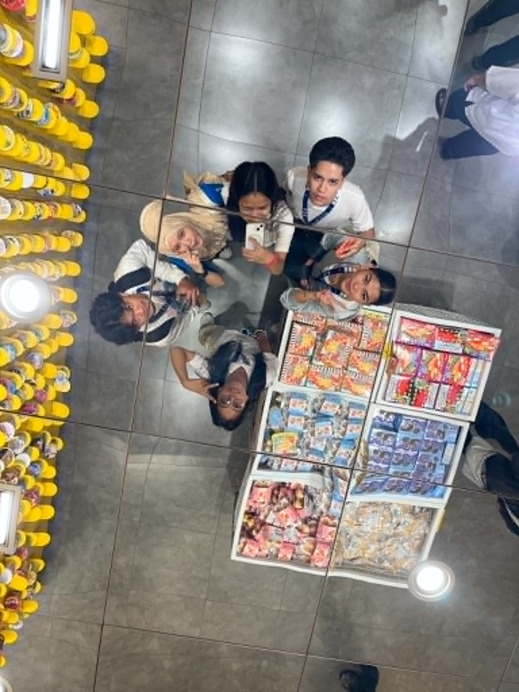

Favorite Photos





What Do I Do? by TAEYEON
Serenade by WINTER(aespa) & JIMIN(aespa)
Freak by Ariana Grande
La La Lost You by NIKI
Vintage by NIKI
Jeju Island, South Korea
Grindelwald, Switzerland
Bali, Indonesia
Paris, France
El Nido, Philippines